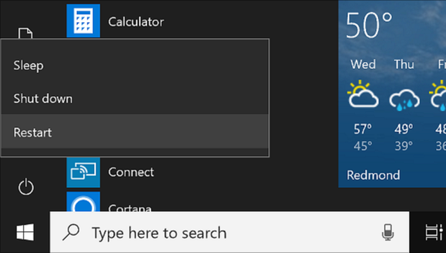
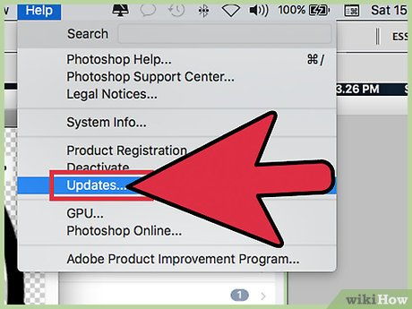
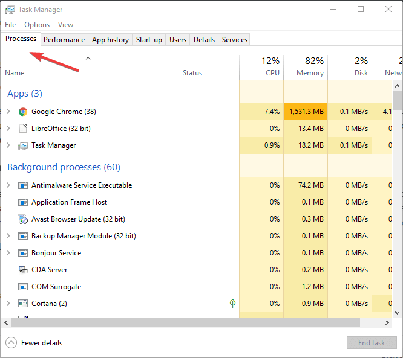
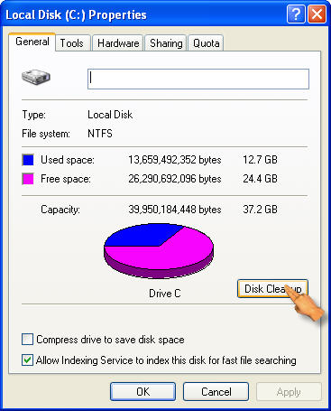

Figuring out what’s wrong with your computer can be tedious. Is it a Windows problem? Your hard drive? Battery? The good news is, you can often get things working by asking a few questions to limit the variables. Depending on the severity of the issue, you may still need to seek out professional tech assistance. However, this list should get you started on the path to solving the most common problems.
How to Troubleshoot a Computer
Step 1: CONSULT GOOGLE
Search engines can be your best friend when it comes to error codes or detailed problems. If you have a vague issue, i.e., ‘my computer is running slowly,’ then it probably won’t offer a clear answer. The more information you’ve gathered and the more efficient your search terms are, the better your chances of finding helpful solutions.
Step 2: REBOOT
We all know the ‘have you tried turning it off and then turning it on again’ trope, but rebooting is a common suggestion because it works. Shut down your computer or, if it’s frozen, force it to power off by holding down the power button.
Step 3: CHECK CONNECTIONS
Take a minute and ensure that everything is properly plugged in. A loose power cable, unplugged keyboard or monitor, or another connection may be to blame.
Step 4: LOOK FOR PROGRAM UPDATES
Check if your operating system is due for an update. The process will vary depending on if you need to complete a Mac or Windows update. If a specific program is causing your computer to crash, check for new versions or uninstall and reinstall the application.
Step 5: CLOSE BACKGROUND TASKS
If your computer is lagging, close any programs that you aren’t using. You can also force-quit active programs if they’re frozen. You’ll need to use Task Manager on a Windows PC or the Force Quit window on a Mac.
Step 6: CLEAN UP YOUR HARD DRIVE
If you have less than 20% of your total disk space free, then a lack of storage may be to blame for your computer problems. Delete anything that you no longer need, including applications and programs, media, and documents.
Step 7: RUN AN ANTIVIRUS PROGRAM
If you’re still experiencing issues, check for malware and other viruses with a scan. Ensure you’re using the latest version of the antivirus program to catch any new, malicious code.
While we can’t cover every conceivable computer problem here, this list should get you started on the path to determining what’s wrong with your device. You may be experiencing other issues caused by computer hardware, such as your motherboard, power cord, battery, or other components. Wi-Fi is another common culprit, so run a speed test or contact your service provider before bringing your device in.
If all else fails, turn to the experts. Computer Troubleshooters is proud to offer comprehensive computer repair and IT services. If you find yourself stumped, get in touch with a location near you. Our professional technicians will help you diagnose the problem, get things back up and running, and make recommendations to keep things working.